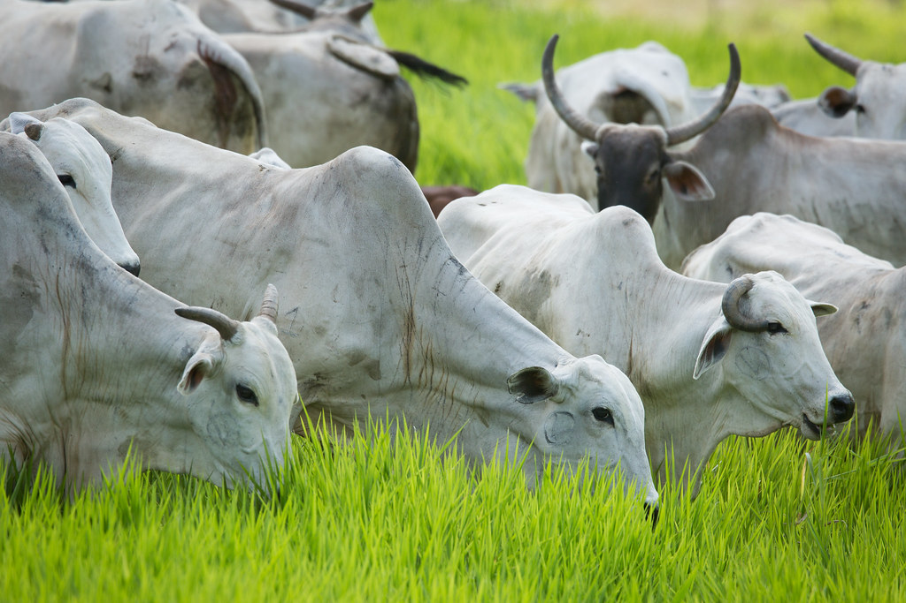
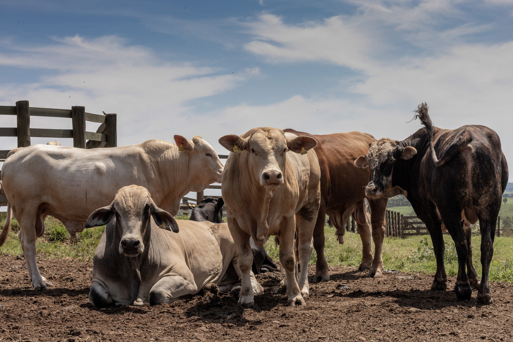

📌 O que é a Pecuária?
- Definição: É a criação de animais como bois, porcos, aves e ovelhas para produção de alimentos e outros produtos.
- Importância econômica: Representa uma parte significativa da economia agrícola no Brasil e no mundo.
- Consumo em massa: Com a crescente demanda por carne e laticínios, a produção pecuária se expandiu rapidamente.

🌳 Desmatamento
- Abertura de pastagens: Florestas são derrubadas para dar lugar a campos de pasto.
- Amazônia sob ameaça: Mais de 60% do desmatamento da floresta amazônica está relacionado à pecuária.
- Perda de biodiversidade: Animais e plantas nativos perdem seus habitats, o que pode causar extinções.

🌍 Emissão de Gases do Efeito Estufa
- Metano (CH₄): Produzido principalmente pela digestão dos ruminantes (bois e vacas).
- Dióxido de carbono (CO₂): Emissões ligadas ao uso de combustíveis fósseis e mudanças no uso da terra.
- Óxidos de nitrogênio (N₂O): Liberados pelo uso de fertilizantes nas pastagens.
- Impacto climático: A pecuária é responsável por cerca de 14,5% das emissões globais de gases do efeito estufa.
🌱 Alternativas Sustentáveis
- Dieta baseada em plantas: Reduz a demanda por produtos de origem animal.
- Pecuária regenerativa: Técnicas que restauram solos e ecossistemas.
- Redução do desperdício: Evitar o descarte de alimentos ajuda a reduzir a necessidade de produção.
- Consumo consciente: Optar por produtos com certificação ambiental.